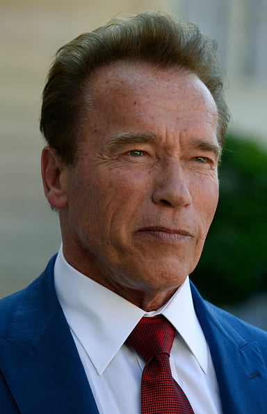
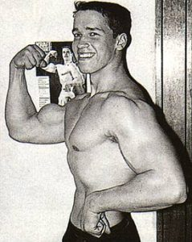
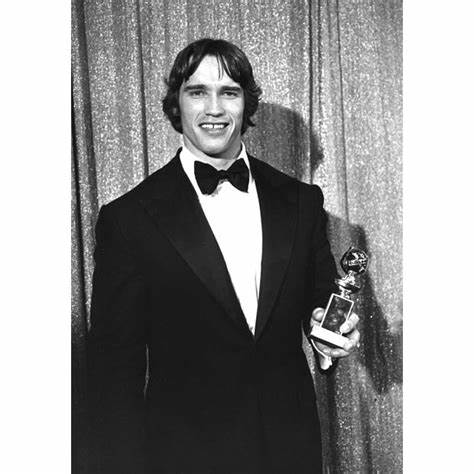
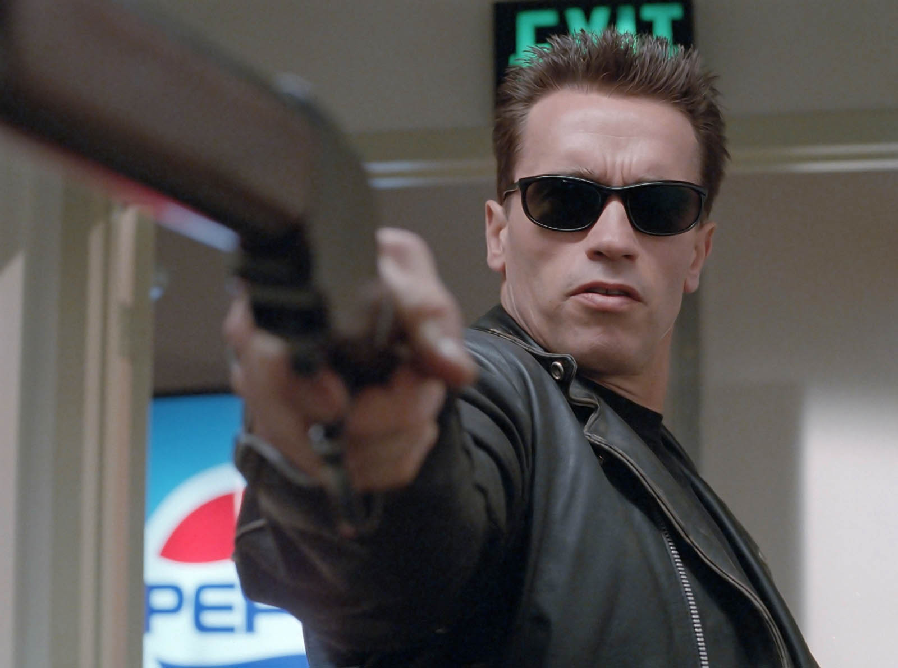
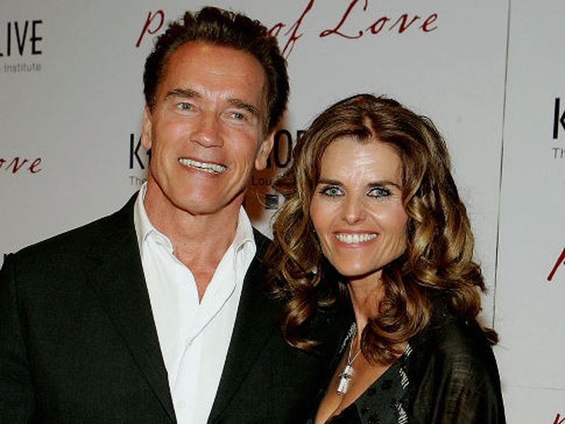

Arnold Schwarzenegger est un grand acteur et bodybuilder connu dans le monde entier, surtout pour son role dans le film terminator et pour son physique legendaire.
Né en 1947, en autriche avec un père violent ancien membre du parti nazi, il se met à la musculation à 14 ans inspiré par un champion de culturisme devenu acteur.
A 20 ans il est le plus jeune athlète à remporter la célebre compétition de clturisme, Mister Universe

A 29 ans il remporte le golden globe du meilleur jeune espoire pour son role de culturiste autrichien dans "Stay Hungry".
En 1984 iljoue dans le film "Terminator", le film qui l'a rendu populaire dans le monde entier.
En 1986, il épouse Maria Shriver, nièce de F.Kennedy.
A 56 ans il est gouverneur de Californie, étant très impliqué dans la lutte contre le changement climatique, il crée l'ONRG 20 ayant pour objectif de reduire d'un quart les emissions de gaz à effet de serre d'ici 2020.